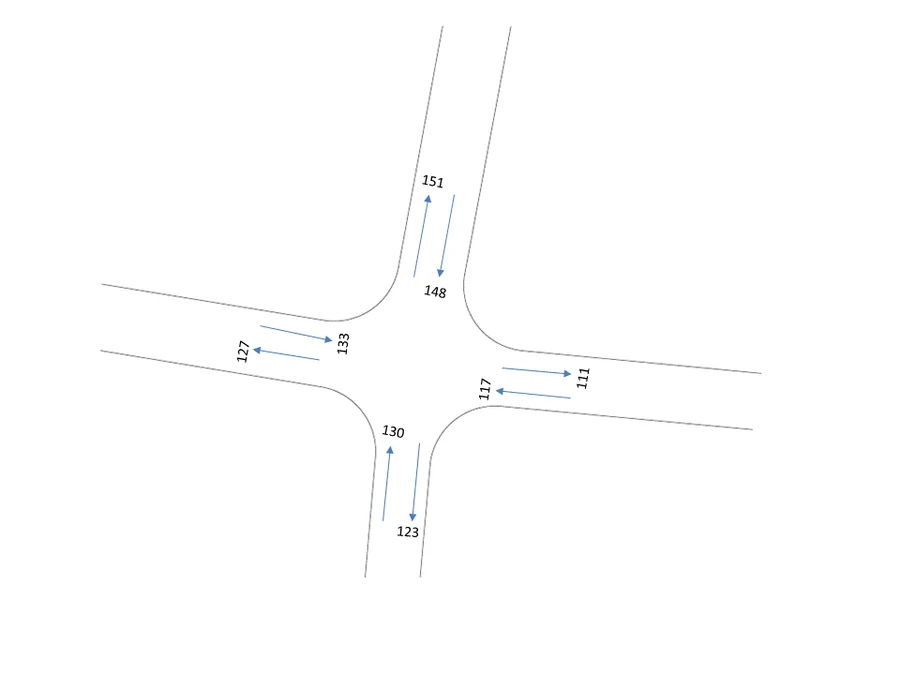
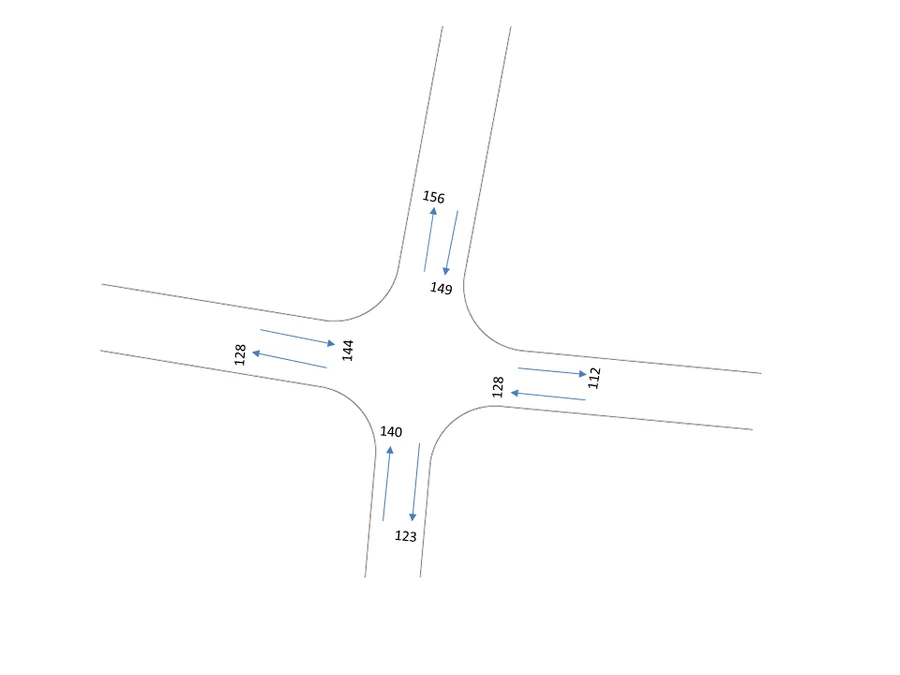

Study setup
I assessed the proposed office development in relation to the nearby Bonomala Rail Gate junction and its connecting approaches, combining existing traffic conditions with expected growth in office employment.
Traffic survey and PCU conversion
I recorded cycles, motorcycles, vans, rickshaws, CNGs, cars, buses and trucks, then converted the mixed traffic to passenger-car units so I could compare directional flows on a common basis.


Trip generation
I estimated employee trip rates from observed access patterns and applied them to the planned increase in employment. That gave me a project-generated demand component to compare with background traffic.
Future traffic scenario
I used a five-year background-growth assumption and compared future directional demand with the capacity assumptions in the report. My recommendations focused on access management, markings and junction operation.
Limitations
This was a coursework-level traffic assessment based on a limited survey period and simplified capacity assumptions. A professional TIA would normally use repeated turning-movement counts, junction delay and queue analysis, separate trip-generation categories and explicit pedestrian, motorcycle and public-transport conditions.